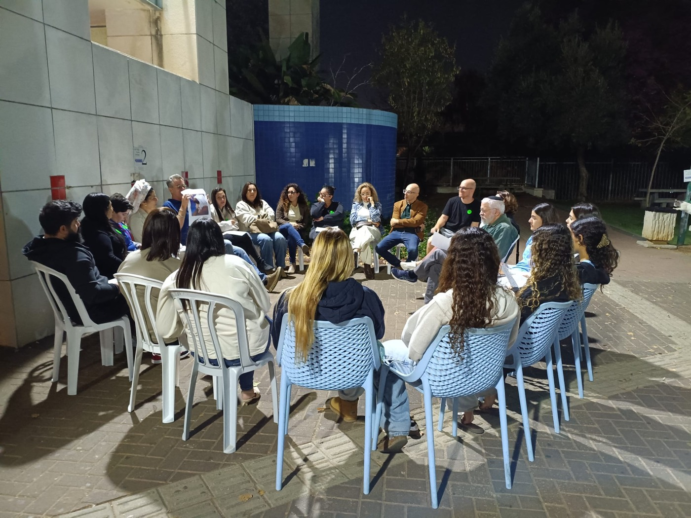
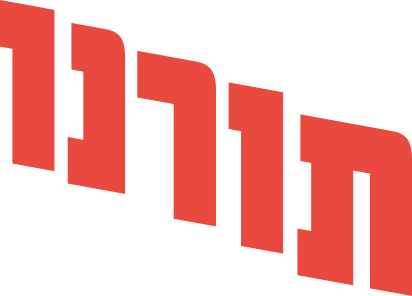
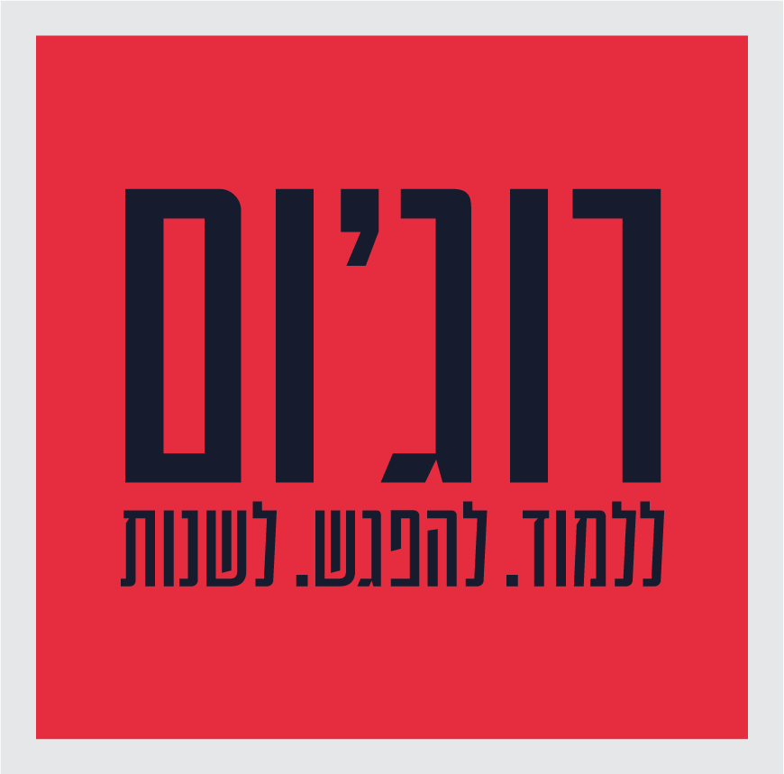
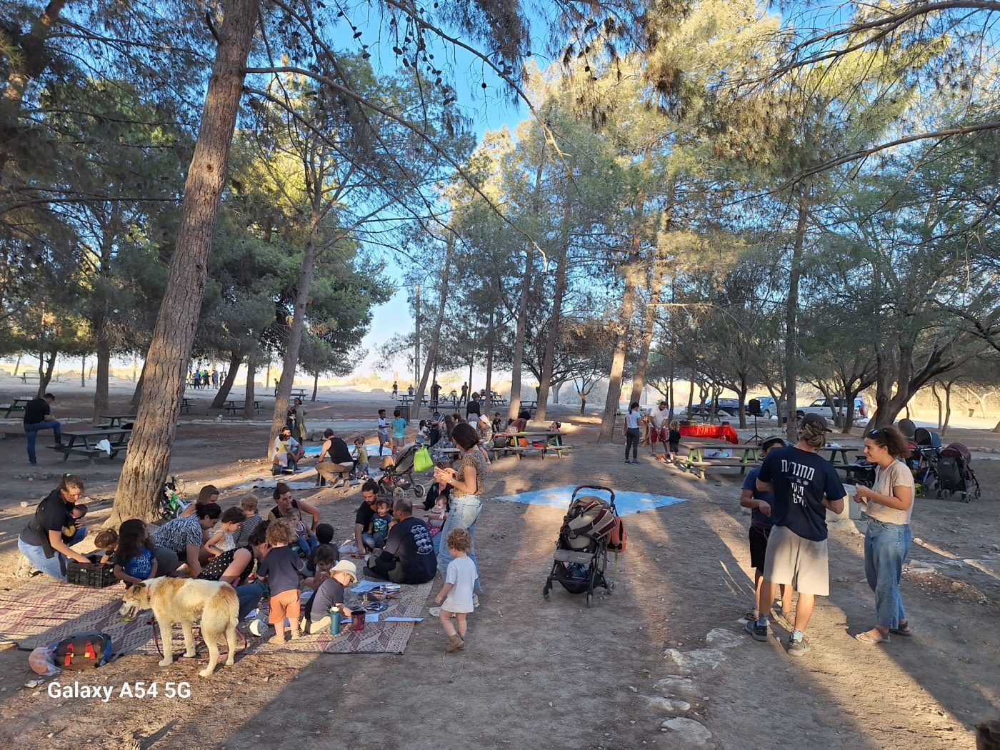
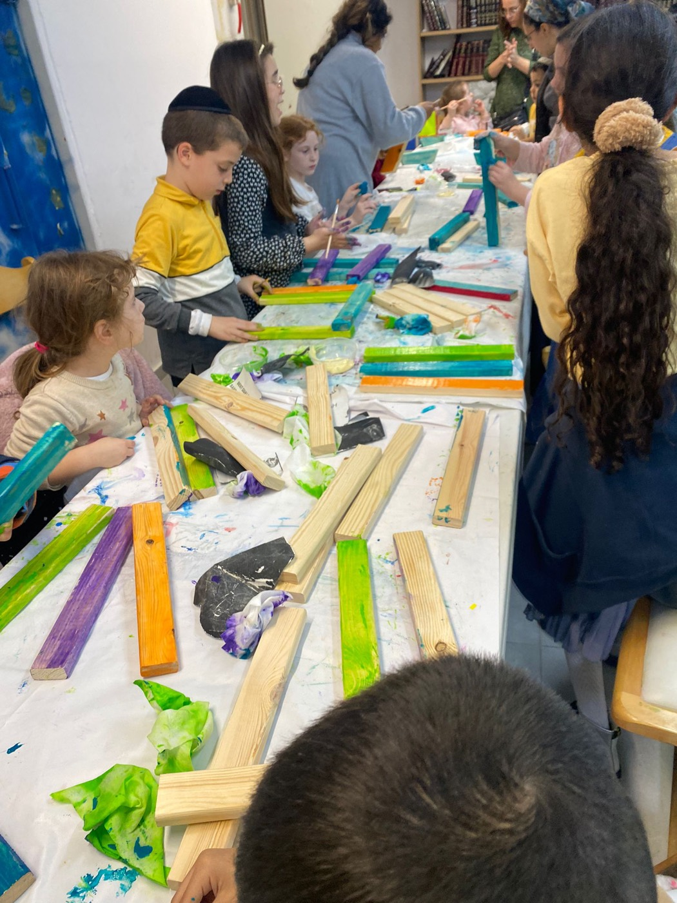
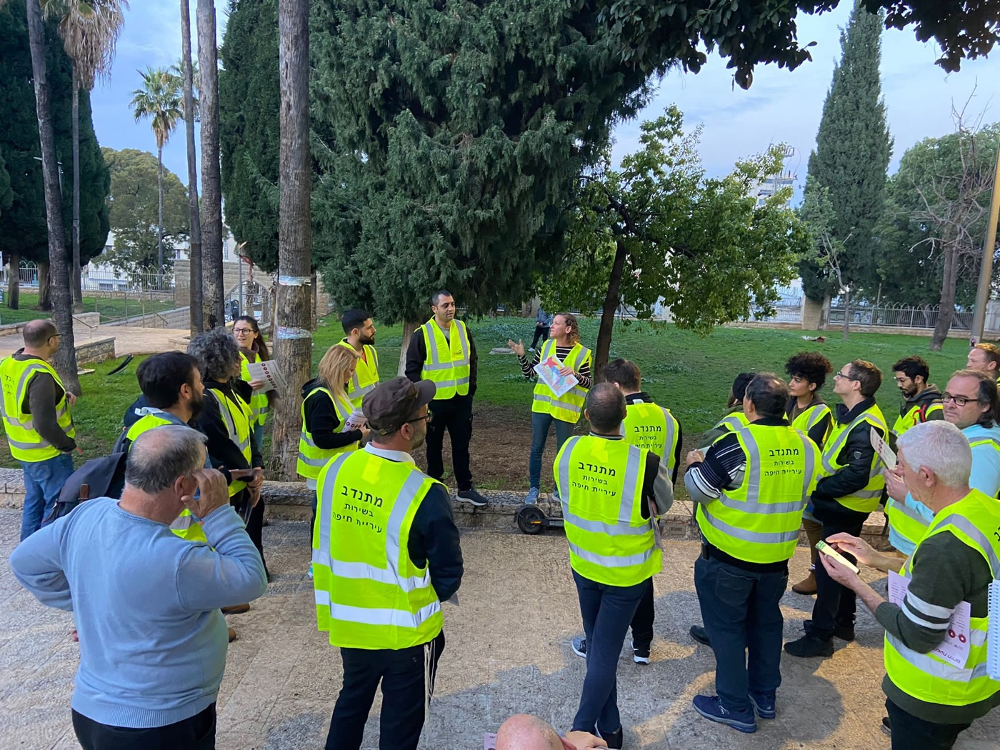

חינוכיים, קהילתיים ותרבותיים — לפעוטות, ילדים, בני נוער, צעירים, מבוגרים וזקנים, בדגש על הפריפריה הגיאוגרפית והחברתית.
קראו עוד על הפעילות שלנו ←



עמותת יסודות לצמיחה דרור מקימה ומפעילה פרויקטים חינוכיים, קהילתיים ותרבותיים לפעוטות, ילדים, בני נוער, צעירים, מבוגרים וזקנים בכל רחבי הארץ, בדגש על הפריפריה הגיאוגרפית והחברתית.
הפרויקטים נפרשים על פני תחומים מגוונים: חינוך, קהילה, תרבות, חקלאות, ספורט ורווחה, ומכוונים להגשמת ערכי הציונות, חלוציות, שוויון ערך האדם, דמוקרטיה ושלום.
בעתות חירום לאומי, העמותה מתגייסת ומקיימת אופני פעילות ייחודיים וייעודיים למגוון אוכלוסיות, בתיאום הרשויות המקומיות והארציות.
הפרויקטים מופעלים ומודרכים על ידי חברי וחברות קיבוצי המחנכים (תנועת דרור ישראל), הפרושים בכל רחבי הארץ.
כל ענף פעילות הוא עולם בפני עצמו. ריחוף (או נגיעה) הופך כל כרטיסייה.
פיתוח תוכניות חינוכיות, הכשרת צוותי חינוך וליווי מערכות חינוך ברחבי הארץ.
חינוך דרך ספורט לילדים ולבני נוער, בעשרות רשויות ברחבי הארץ מאז 2010.
פעילות חינוכית-חקלאית בקיבוץ רביד, ללמוד לאהוב לעבוד.
קבוצות חברתיות לבני ולבנות הגיל השלישי, לקידום הזדקנות מיטבית.
מוסד תרבותי בלב עכו העתיקה, פועל מאז 2009.
פיתוח קהילתי מקומי, ליווי תהליכים והכשרת צוותים.

תוכנית ארצית לצעירים (25–35) בגבול הצפון ובנגב המערבי.

רשת קהילות יוצרות לצעירים וצעירות (20–35).
סטודיו תנועה ויוגה ברחובות, הוקם ע"י חברי תנועת דרור ישראל.
התוכן והקישור לפרויקט הזה עוד בדרך.
עמותת יסודות לצמיחה דרור פועלת לפיתוח ולחיזוק קהילות מקומיות ברחבי הארץ. קיבוצי המחנכים שלנו פועלים מתוך אמונה בכוחה של קהילה ליצור שייכות, להצמיח יוזמות ולחולל שינוי חברתי — ולהפוך את מקום המגורים למרחב של מפגש, יצירה, עשייה משותפת ואחריות הדדית.
במסגרת הפעילות אנו יוזמים ומפתחים מרחבים חינוכיים, חברתיים ותרבותיים המחברים בין חברי וחברות תנועת דרור ישראל לבין תושבי המקום: גינות קהילתיות, מרחבי יצירה ותרבות, קבוצות קהילתיות, יוזמות שכונתיות ואירועים משותפים.
באמצעות חיבורים בין אנשים, ליווי יוזמות מקומיות ושיתופי פעולה עם רשויות וארגונים, אנו מבקשים להצמיח קהילות חיות שבהן אנשים לא רק חיים זה לצד זה, אלא יוצרים יחד מציאות של שותפות, ערבות הדדית ותקווה.
בשנים האחרונות, לנוכח מצבי המלחמה והחירום שפקדו את החברה הישראלית, העמותה מתגייסת לתת מענה לצורכי השעה ולחזק את המקומות שבהם היא פועלת — מתוך אמונה בכוחה של קהילה ובחשיבותה של הערבות ההדדית דווקא ברגעי משבר.

הקמת 7 ועדי הנהגות של תושבי שדרות לדאגה לצורכי הקהילה.

הפעלות לילדים במקלטים וקבוצות צעירים, בעיר שמופגזת מתחילת המלחמה.

פעילות הפגתית קבועה במקלטים ציבוריים, בשילוב דוברי עברית וערבית.

אירוח וקליטה של מפוני קיבוץ ארז לכל מסגרות היישוב.

הפעלת עשרות מקלטים בעיר: קבלות שבת, שעות סיפור ותאטרון קהילתי.

צוותי חירום לפי בניינים, לצד קידום יוזמות קהילתיות.

נאמני חירום רובעיים, גינה קהילתית פעילה וקבוצות נשים וקשישים.
כל תרומה מסייעת לנו להמשיך ולהעניק מענה חינוכי, חברתי ואנושי לקהילות בחירום.